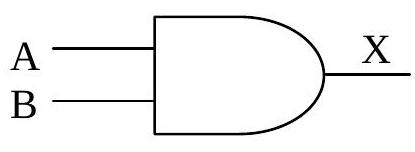
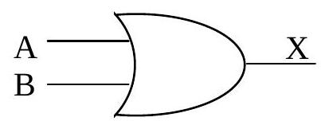
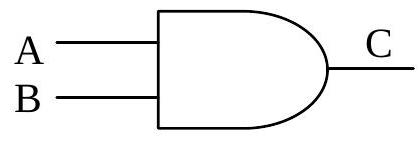
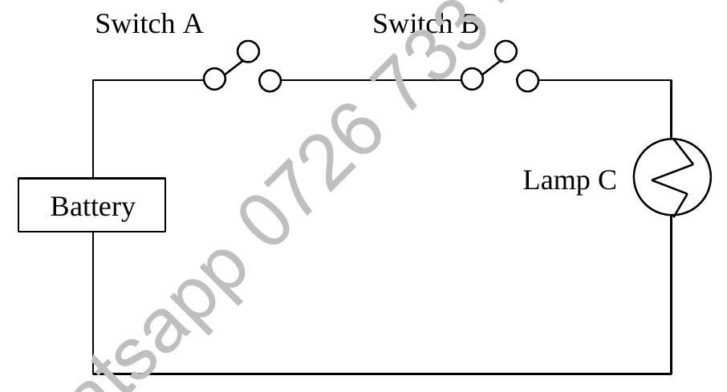
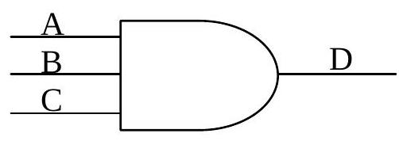
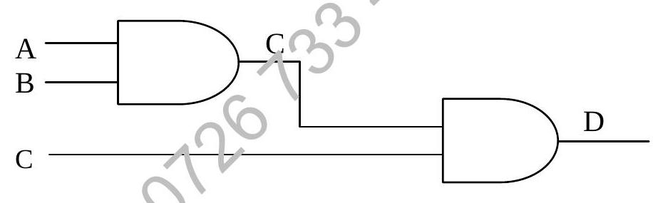

Chapter 5 : Boolean Algebra (I)
Chapter Objectives
At the completion of this chapter, you would have learnt:
- the importance of two-state (TRUE/FALSE) logic in computing;
- model logical relations by truth tables, Venn diagrams, switching circuits or 'gates'.
5.1 Introduction
In programming, especially in selection or branching statements, we need to specify conditions. These conditions are either satisfied or not satisfied, in other words they are either TRUE or FALSE. Thus understanding of this two-state (TRUE or FALSE) logic is fundamental in programming, it will help to identify many logic errors that would be made otherwise.
In digital electronics, devices like digital computers, calculators fundamentally work on two-state, 1 or 0, (ON or OFF). There are tiny circuit elements which operate on the two states, they are called Logic Gates. In this chapter, we will know more about AND, OR, NOT, NAND.
5.2 Logic in Programming
Sooner or later, in all but the simplest of programs, we meet a situation where we have to write something like "IF so-and-so THEN DO something, ELSE DO something different". This means that we must be able to model the problem in two-state logical terms, i.e. outcome is YES or NO.
In many cases, we may be making several logical decisions within a single line of code. If, for example, we are sorting data into the classes which we used for our statistical distribution of the run-times, we might well do so by a line such as:
IF x < 7 THEN
C1 ← C1 + 1
ELSE IF X < 11 THEN
C2 ← C2 + 1
ELSE IF X < 15 THEN
C3 ← C3 + 1
ELSE
C4 ← C4 + 1
ENDIFThis involves compound decisions within which each single decision must be logically correct, without any doubt whatever.
This is the realm of two-state logic, also referred to as Binary Logic and we use '1' for true or yes and '0' for false or no.
5.3 Logic and Hardware
We shall also need to know precisely how the logical two-state system maps on to a physical two-state switching system if we become involved with assembly languages or the theory and architecture of the computer, or if we need to program any process control applications.
Today such systems, from controlling traffic lights to running the cycles of a washing machine, embody the logical models in various arrangements of miniaturised transistor switches in 'chips'. In this context, 'yes' ordinarily translates as 'switch on' and 'no' as 'switch off'.
5.4 Language and Symbols
A different language & some new symbols:
STATEMENT
- Used in two-state logic to mean any single proposition which can only be TRUE or FALSE.
We now venture into total certainty, which associates YES with TRUE and binary 1; NO with FALSE and binary 0.
Statements may be COMPOUND, when we associate two or more by the conjunction AND, or by the disjunction OR.
We often use the letters p, q and r as the symbols for this sort of logical statement. In particular, the compound statement $p \land q$ means 'the consequences' of the two statements in conjunction. The consequences refer to the four possible results of any compound of two statements.
Similarly, $p \lor q$ indicates the possible results of the disjunction of p, q. 'NOT p' is symbolised by $\sim p$ or $\overline{p}$.
5.5 Truth Tables
Let us now use our primary tool for simplifying the NOT, AND and OR models, the truth table.
| p | q | p ∧ q (p AND q) | p ∨ q (p OR q) |
|---|---|---|---|
| False (0) | False (0) | False (0) | False (0) |
| False (0) | True (1) | False (0) | True (1) |
| True (1) | False (0) | False (0) | True (1) |
| True (1) | True (1) | True (1) | True (1) |
In logic, we distinguish between OR (inclusive OR), meaning in either of the named sets or their intersection, and XOR (exclusive OR), which means in either but not both.
5.6 Logical Equivalence
The use of truth tables leads also to another condition, the logical equivalence of compound statements. If the outcomes of two truth tables are identical, the statements which they represent are logically equivalent and we use the '=' or '$\equiv$' symbol to represent this state.
For example, $\sim(p \land q) \equiv (\sim p \lor \sim q)$ (De Morgan's Law)
| p | q | p ∧ q | ~(p ∧ q) | ~p | ~q | ~p ∨ ~q |
|---|---|---|---|---|---|---|
| 0 | 0 | 0 | 1 | 1 | 1 | 1 |
| 0 | 1 | 0 | 1 | 1 | 0 | 1 |
| 1 | 0 | 0 | 1 | 0 | 1 | 1 |
| 1 | 1 | 1 | 0 | 0 | 0 | 0 |
The compound statements will often include more than two propositions and the table may then become quite large.
If the compound statement were 'p AND q OR r' we might find that the interpreter we are using automatically takes the 'AND' before the 'OR', but is often safer to use brackets whilst we are working on the model and write it as $(p \land q) \lor r$ and to insert the intermediate result, which is $p \land q$:
| p | q | (p ∧ q) | r | (p ∧ q) ∨ r |
|---|---|---|---|---|
| 0 | 0 | 0 | 0 | 0 |
| 0 | 0 | 0 | 1 | 1 |
| 0 | 1 | 0 | 0 | 0 |
| 0 | 1 | 0 | 1 | 1 |
| 1 | 0 | 0 | 0 | 0 |
| 1 | 0 | 0 | 1 | 1 |
| 1 | 1 | 1 | 0 | 1 |
| 1 | 1 | 1 | 1 | 1 |
With three statements, we must ensure that the program includes all the $2^3 = 8$ possible combinations which can give rise to 8 possible results.
Example: For the boolean expression $Z = A + B \cdot \overline{C}$ or $Z = A \lor (B \land (\sim C))$
The truth table is as follows:
| A | B | C | $\overline{C}$ | $B \cdot \overline{C}$ | $Z = A + B \overline{C}$ |
|---|---|---|---|---|---|
| 0 | 0 | 0 | 1 | 0 | 0 |
| 0 | 0 | 1 | 0 | 0 | 0 |
| 0 | 1 | 0 | 1 | 1 | 1 |
| 0 | 1 | 1 | 0 | 0 | 0 |
| 1 | 0 | 0 | 1 | 0 | 1 |
| 1 | 0 | 1 | 0 | 0 | 1 |
| 1 | 1 | 0 | 1 | 1 | 1 |
| 1 | 1 | 1 | 0 | 0 | 1 |
Example: For the boolean expression $Z = (A \cdot \overline{B}) + \overline{C} + D$ or $Z = (A \land (\sim B)) \lor (\sim C) \lor D$
The truth table is as follows:
| A | B | C | D | $\overline{B}$ | $A \cdot \overline{B}$ | $\overline{C}$ | $Z=(A \cdot \overline{B}) + \overline{C} + D$ |
|---|---|---|---|---|---|---|---|
| 0 | 0 | 0 | 0 | 1 | 0 | 1 | 1 |
| 0 | 0 | 0 | 1 | 1 | 0 | 1 | 1 |
| 0 | 0 | 1 | 0 | 1 | 0 | 0 | 0 |
| 0 | 0 | 1 | 1 | 1 | 0 | 0 | 1 |
| 0 | 1 | 0 | 0 | 0 | 0 | 1 | 1 |
| 0 | 1 | 0 | 1 | 0 | 0 | 1 | 1 |
| 0 | 1 | 1 | 0 | 0 | 0 | 0 | 0 |
| 0 | 1 | 1 | 1 | 0 | 0 | 0 | 1 |
| 1 | 0 | 0 | 0 | 1 | 1 | 1 | 1 |
| 1 | 0 | 0 | 1 | 1 | 1 | 1 | 1 |
| 1 | 0 | 1 | 0 | 1 | 1 | 0 | 1 |
| 1 | 0 | 1 | 1 | 1 | 1 | 0 | 1 |
| 1 | 1 | 0 | 0 | 0 | 0 | 1 | 1 |
| 1 | 1 | 0 | 1 | 0 | 0 | 1 | 1 |
| 1 | 1 | 1 | 0 | 0 | 0 | 0 | 0 |
| 1 | 1 | 1 | 1 | 0 | 0 | 0 | 1 |
Truth Tables can be used to prove the logic equality of two different boolean expressions, as shown in the example below.
Example: To prove: $A \cdot (A+B) = A + A \cdot B = A$
Truth table for $A \cdot (A + B)$
| A | B | A + B | A . (A + B) |
|---|---|---|---|
| 0 | 0 | 0 | 0 |
| 0 | 1 | 1 | 0 |
| 1 | 0 | 1 | 1 |
| 1 | 1 | 1 | 1 |
Truth table for $A + A \cdot B$
| A | B | A . B | A + A . B |
|---|---|---|---|
| 0 | 0 | 0 | 0 |
| 0 | 1 | 0 | 0 |
| 1 | 0 | 0 | 1 |
| 1 | 1 | 1 | 1 |
The two expressions $A \cdot (A+B)$ and $A + A \cdot B$ are shown to be logically equivalent, because they have the same outputs in the above truth tables.
Note also that these outputs are also exactly the same as the inputs for A.
Therefore it is proven that $A \cdot (A+B) = A + A \cdot B = A$
5.7 Switching Diagrams
It has long been the practice to illustrate such possibilities, in Control Systems, by reference to diagrams showing the switching On and Off of an electric light.
The switching function is carried out, within the computer, by circuits known as Logic Gates, for which statements have to be converted to electrical voltages, still identified as '1' or '0' for 'On' and 'Off' but with individual statements, or Inputs, labelled as A, B, C, and so on whilst consequences, or Outputs, are labelled X, Y, Z.
These 'gates' are represented in diagrams as shown below but, just as with a truth table, compound statements may give any number of 'inputs' and gates may be combined in many different ways.
The AND gate
The OR gate
Here $A \land B$ is represented as A.B and $A \lor B$ is represented as A+B. So the two-input AND gate means that to generate a voltage, indicated by '1' at the output, we must apply voltage at all inputs. For the OR gate, a voltage at the output is generated by an appropriate voltage at any one or more inputs.
If we have a statement, 'IF in A AND NOT in B THEN DO ...', then we see that we need to invert an input (or an output) to conform to our logical model.
5.7.1 AND Function (or AND gate)
The AND gate circuit symbol is as follows:
A basic AND gate has two inputs A and B, and one output C. All A, B and C are logical and binary variables which can only be '0' or '1' i.e. A, B and C are bits in nature.
The analogy of the AND gate is as follows:
| Switch A | Switch B | Lamp C |
|---|---|---|
| OFF (0) | OFF (0) | OFF (0) |
| OFF (0) | ON (1) | OFF (0) |
| ON (1) | OFF (0) | OFF (0) |
| ON (1) | ON (1) | ON (1) |
The AND function output C is a 1 (True) only if both inputs A=1 AND B=1, or else, output C=0. This can be better represented by a truth table which relates the output to all possible input conditions.
A Truth Table shows the relationship between input conditions and output.
When input A and B are both '1', the output will be '1'.
Mathematically, this can be expressed in a boolean equation as:
or
Example: A 3-input AND gate:
is the same as
The truth table is as follows.